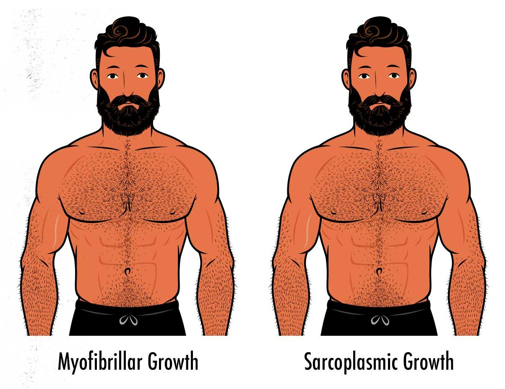
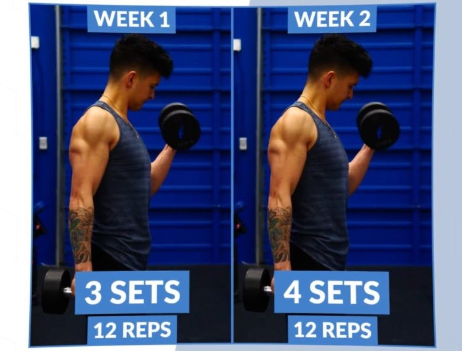
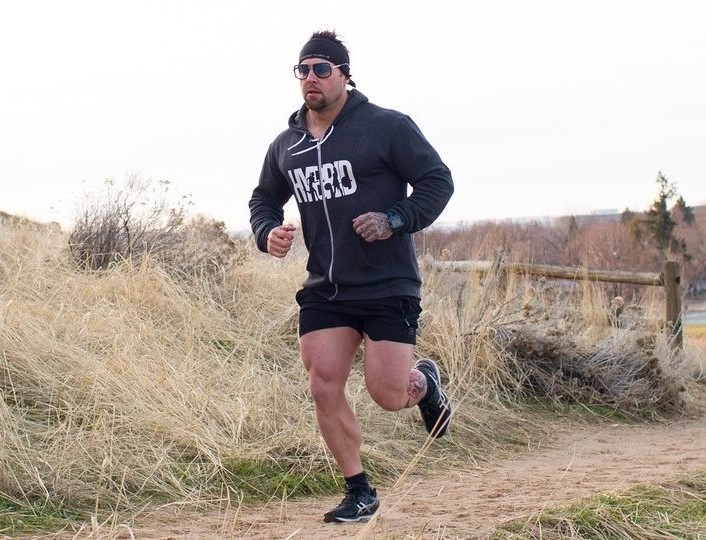

Blogs
Maximizing Muscle Growth: Understanding Hypertrophy
Last Updated: April 24, 2024
Hypertrophy, often referred to as muscle growth, is a key goal for many individuals engaged in strength training and bodybuilding. Understanding the principles behind hypertrophy is essential for optimizing your workouts and achieving your desired physique.
Key Points:
- Muscle Hypertrophy Types: sarcoplasmic hypertrophy and myofibrillar hypertrophy. Sarcoplasmic hypertrophy refers to an increase in the volume of fluid within the muscle cells, while myofibrillar hypertrophy involves an increase in the size and number of myofibrils, the contractile units of muscle fibers.
- Training for Hypertrophy: To stimulate muscle growth, it's important to incorporate a combination of high-volume resistance training, moderate to high intensity, and adequate rest periods between sets. Exercises that target multiple muscle groups and allow for progressive overload, such as squats, deadlifts, bench presses, and rows, are particularly effective for inducing hypertrophy.
- Nutrition and Hypertrophy: Proper nutrition plays a crucial role in supporting muscle growth. Consuming an adequate amount of protein, carbohydrates, and fats, as well as staying hydrated, helps provide the necessary nutrients for muscle repair and growth. Additionally, timing nutrient intake around workouts, particularly protein consumption post-exercise, can enhance the hypertrophic response.
- Recovery and Hypertrophy: Adequate rest and recovery are essential for maximizing hypertrophy. Muscles need time to repair and rebuild after intense workouts, so ensuring sufficient sleep, managing stress levels, and incorporating active recovery strategies such as foam rolling and mobility work can aid in the recovery process and promote muscle growth.
Conclusion:
Incorporating effective training, nutrition, and recovery strategies is key to maximizing muscle hypertrophy. By understanding the principles behind hypertrophy and implementing evidence-based practices, you can optimize your workouts and achieve your goals of building lean muscle mass and strength.

Pushing Your Limits: The Importance of Overloading in Strength Training
Last Updated: April 24, 2024
Overloading is a fundamental principle of strength training that involves progressively increasing the intensity or volume of your workouts to continually challenge your muscles and stimulate adaptation. Understanding how to effectively overload your muscles is crucial for making progress and achieving your strength and fitness goals.
Key Points:
- Progressive Overload: Progressive overload is the cornerstone of strength training and involves gradually increasing the demands placed on your muscles over time. This can be achieved by increasing the weight lifted, the number of repetitions performed, or the intensity of exercises.
- Variety and Progression: Incorporating a variety of exercises and training modalities into your routine can help prevent plateaus and ensure continued progress. Experiment with different rep ranges, training techniques, and exercise variations to keep your workouts challenging and stimulating.
- Monitoring and Adjusting: Paying attention to your body's response to training and tracking your progress is essential for effective overloading. Keep detailed records of your workouts, including weights lifted, sets, and repetitions, and adjust your training variables accordingly to ensure continued progress.
- Deloading: Periodic deloading phases, where training volume and intensity are reduced, can be beneficial for preventing overtraining and allowing for recovery and adaptation to occur. Deloading weeks or cycles give your body a chance to recuperate, reduce fatigue, and come back stronger for future training.
Conclusion:
Incorporating progressive overload into your strength training regimen is essential for making gains in muscle size, strength, and overall fitness. By consistently challenging your muscles with progressively heavier weights and varying training stimuli, you can push your limits, break through plateaus, and achieve new levels of strength and performance.

The Art of Recovery: Understanding Deloading in Training
Last Updated: April 24, 2024
Deloading is a strategic approach to training that involves temporarily reducing training volume and intensity to allow for recovery and prevent overtraining. While it may seem counterintuitive to back off from intense workouts, deloading plays a crucial role in long-term progress and injury prevention.
Key Points:
- Purpose of Deloading: Deloading serves several important purposes in training, including reducing accumulated fatigue, preventing overtraining, and allowing for physiological and psychological recovery. By giving your body a break from intense training stimuli, deloading helps reset your nervous system, restore hormonal balance, and repair muscle tissue.
- Deloading Strategies: There are various approaches to deloading, including reducing training volume (e.g., fewer sets and reps), decreasing training intensity (e.g., using lighter weights), or incorporating active recovery activities such as mobility work, yoga, or low-impact cardio. The duration and frequency of deloading periods can vary depending on individual training goals, recovery capacity, and training intensity.
- Signs You Need to Deload: It's important to listen to your body and recognize signs of overtraining or burnout that may indicate the need for a deload. Symptoms such as persistent fatigue, decreased performance, irritability, disrupted sleep, and increased susceptibility to illness can signal that it's time to scale back and allow your body to recover.
- Benefits of Deloading: Deloading not only aids in physical recovery but also provides mental relief from the constant stress of intense training. It allows athletes to recharge mentally, regain motivation, and approach subsequent training cycles with renewed energy and focus.
Conclusion:
Incorporating deloading phases into your training program is essential for long-term progress and injury prevention. By strategically implementing deload weeks or cycles, you can optimize recovery, manage fatigue, and maintain consistent performance gains over time. Remember to listen to your body, monitor your training response, and adjust your deloading strategy as needed to support your overall training goals and well-being.

Mobility Matters: Enhancing Movement and Performance
Last Updated: April 24, 2024
Mobility is often overlooked but plays a critical role in overall fitness and performance. It refers to the ability to move a joint through its full range of motion actively and effectively. Poor mobility can lead to compensatory movements, decreased performance, and increased risk of injury. Therefore, integrating mobility exercises into your routine is essential for optimizing movement quality, preventing injuries, and maximizing performance.
Key Points:
- Benefits of Mobility: Improved mobility enhances joint health, flexibility, and movement efficiency. It allows for better execution of exercises, reduces the risk of muscle imbalances and compensatory patterns, and enhances athletic performance in various activities.
- Mobility vs. Flexibility: While flexibility focuses on the length of muscles and connective tissues, mobility encompasses both flexibility and stability around a joint. It involves active control and strength within the full range of motion, providing functional movement capabilities.
- Mobility Training Techniques: Incorporate dynamic stretching, foam rolling, mobility drills, and corrective exercises targeting specific movement patterns and areas of restriction. Focus on areas prone to tightness or limited mobility, such as hips, shoulders, and thoracic spine.
- Integration into Training: Prioritize mobility work as part of your warm-up routine to prepare the body for exercise and improve movement quality. Additionally, perform mobility exercises during rest periods between sets or as a standalone session to address mobility limitations and promote recovery.
Conclusion:
Prioritizing mobility training is essential for enhancing movement quality, preventing injuries, and optimizing performance in both daily activities and athletic pursuits. By incorporating targeted mobility exercises into your routine and addressing areas of restriction, you can unlock your body's full potential and move with greater efficiency, stability, and confidence.
Maximizing Cardiovascular Conditioning: Strategies for Endurance and Health
Last Updated: April 24, 2024
Cardiovascular conditioning is vital for overall health, endurance, and performance. It involves training the heart and lungs to efficiently deliver oxygen to working muscles and remove metabolic byproducts during prolonged physical activity. Whether your goal is to improve cardiovascular health, enhance endurance, or support fat loss, incorporating cardiovascular training into your regimen is essential for achieving optimal fitness levels.
Key Points:
- Types of Cardiovascular Training: Include both steady-state cardio and high-intensity interval training (HIIT) in your routine. Steady-state cardio involves maintaining a consistent intensity over an extended period, such as jogging or cycling at a moderate pace. HIIT alternates between short bursts of high-intensity effort and brief recovery periods, maximizing calorie burn and cardiovascular adaptation.
- Benefits of Cardiovascular Training: Regular cardiovascular exercise improves heart health, enhances aerobic capacity, increases stamina, and boosts overall energy levels. It also aids in weight management, reduces stress, improves sleep quality, and lowers the risk of chronic diseases such as heart disease, diabetes, and hypertension.
- Programming Considerations: Determine your training goals and tailor your cardiovascular program accordingly. Incorporate a mix of low, moderate, and high-intensity sessions, vary the duration and type of cardio activities, and progressively overload to continue challenging your cardiovascular system and avoiding plateaus.
- Integration with Strength Training: Balance cardiovascular training with strength training to optimize overall fitness. Consider scheduling cardio sessions on separate days or performing them after strength workouts to avoid interference with muscle recovery and adaptation. Alternatively, incorporate circuit training or metabolic conditioning workouts that combine strength and cardio exercises for a time-efficient and effective workout.
Conclusion:
Cardiovascular conditioning is a cornerstone of fitness, providing numerous health benefits and enhancing overall performance. By incorporating a variety of cardiovascular training methods into your routine, customizing your workouts to align with your goals, and staying consistent with your training regimen, you can maximize your cardiovascular health, endurance, and fitness level, leading to a healthier, more active lifestyle.